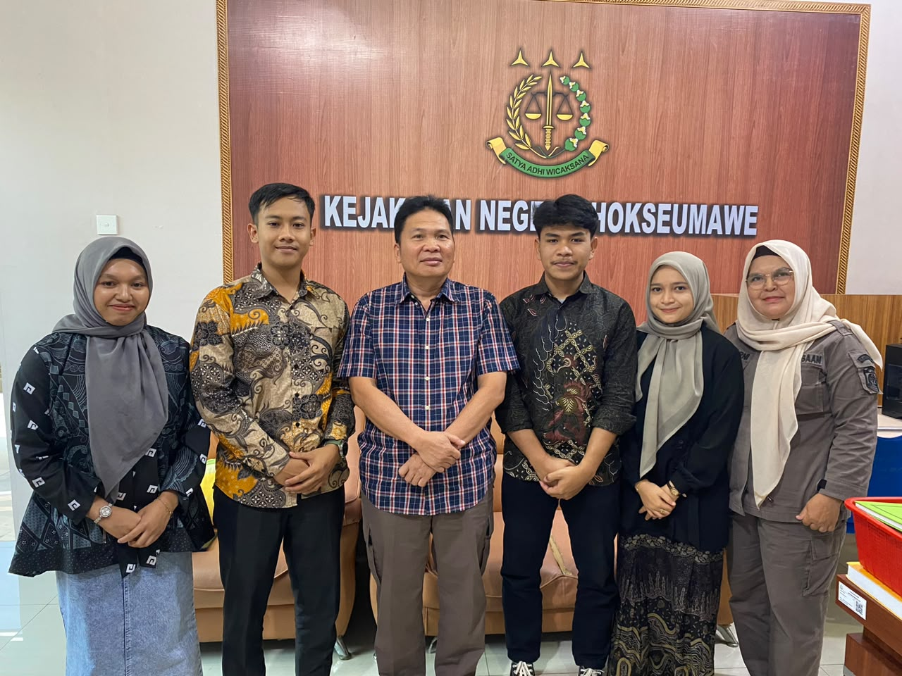

Web-Based Simple Multi Attribute Rating Technique for Employee Performance Evaluation
Indonesian Journal of Innovation Studies - Terindeks Sinta 3

Latar Belakang Masalah
A. Permasalahan Umum: Di lingkungan instansi pemerintah, evaluasi kinerja pegawai (terutama pegawai honorer) seringkali belum berjalan secara objektif, terstruktur, dan terukur, sehingga dapat menimbulkan ketidaksesuaian antara kontribusi pegawai dan apresiasi yang diberikan.
B. Kasus Spesifik: Pada Kejaksaan Negeri Lhokseumawe, proses penilaian kinerja pegawai honorer masih dilakukan secara manual dan tidak terstandar, sehingga kurang efisien, rentan terhadap subjektivitas penilai, serta menyulitkan proses pengambilan keputusan yang profesional (seperti perpanjangan kontrak kerja, pembinaan, atau pemberian penghargaan).
Metode yang Digunakan
A. Metode Pengembangan Sistem: Menggunakan metode Waterfall yang memiliki tahapan terstruktur (Analisis Kebutuhan, Desain Sistem, Implementasi/Coding, Pengujian, dan Penerapan).
B. Metode Pendukung Keputusan: Menggunakan metode SMART (Simple Multi Attribute Rating Technique) untuk melakukan perhitungan multikriteria secara objektif. Terdapat 6 kriteria utama yang dinilai, yaitu:
- Capaian Kinerja (Output/Hasil) – Bobot 40%
- Perilaku Kerja (BerAKHLAK) – Bobot 20%
- Disiplin dan Kehadiran – Bobot 15%
- Integritas & Kepatuhan Etik – Bobot 15%
- Kepatuhan SOP dan Keamanan Dokumen – Bobot 5%
- Inisiatif dan Perbaikan Proses – Bobot 5%
C. Teknologi: Dibangun dalam bentuk aplikasi berbasis web (menggunakan pemrograman web dan basis data) serta dilengkapi dengan fitur keamanan seperti validasi login dan captcha.
Hasil & Kesimpulan
A. Hasil Akhir:
- Sistem berhasil diimplementasikan secara otomatis untuk mengelola data pegawai, menghitung nilai utilitas dan normalisasi bobot SMART, hingga menghasilkan perangkingan status pegawai (Layak, Perlu Dipertimbangkan, dan Tidak Layak).
- Berdasarkan pengujian fungsionalitas menggunakan Blackbox Testing, seluruh fitur sistem berjalan dengan baik tanpa error.
- Berdasarkan pengujian usability menggunakan metode System Usability Scale (SUS) kepada responden, sistem memperoleh rata-rata skor 80,92, yang dikategorikan sebagai "Good" (Baik), menunjukkan bahwa aplikasi mudah digunakan dan dapat diterima dengan baik oleh pengguna.
B. Kesimpulan: Penelitian ini berhasil membangun sistem informasi penilaian kinerja berbasis web dengan metode SMART di Kejaksaan Negeri Lhokseumawe. Sistem ini terbukti mampu menghilangkan unsur subjektivitas manual, meningkatkan transparansi serta akuntabilitas instansi, dan memudahkan pengambil keputusan dalam mengevaluasi kinerja pegawai honorer secara objektif dan terukur.
Klik tombol untuk melihat publikasi jurnal
Publikasi Jurnal